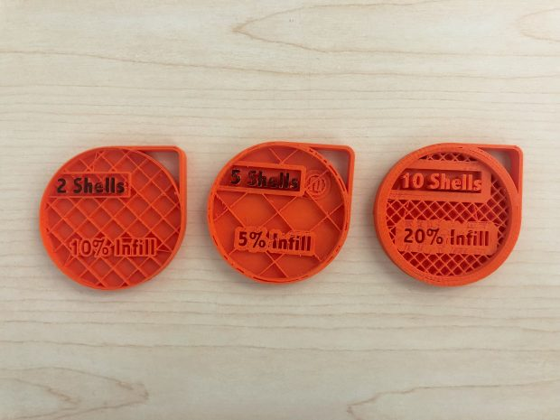

What is 3D printing?
How do I submit a print?
What Specifications should I use: Infill, Scale, Layer height, supports?
Which material should I use for my print?
How much does it cost?
How long does it take?
Can I choose a color?
What file types are accepted?
What kind of printers are available?
Where do I get 3D files or make my own?
Why does my print look different than the file I sent?
Log into your dashboard and click on submit new print job. Upload a 3D file and fill out the fields. Click submit. If you want to know what infill, layer height, scale, and whether to use supports or not please read what those specifications mean below. If you have specific questions regarding your print; email us at dscommons@uvic.ca or submit a job with what you think you want and leave a note in the options. We will help out and answer any questions you may have.
The infill is the percentage of the inside of the print that is filled with material. A higher infill makes the object sturdy and able to bear more weight, but can significantly increase the cost. Most decorative items can have 5-10% infill. Having no infill is not advised, unless the object was specifically designed to be printed with zero infill.
Scale
The scale is the size of the print by comparison to the size it was designed to be. Many models are printed at 100% scale, but it is also common to change the size. Keep in mind: when decreasing model size, you will also be decreasing wall thickness and the size of detail. This can result in a loss of quality when printing, if taken too far. Increasing the size will also increase the amount of material used, increasing the cost.
Layer Height
3D printing is done by slicing the digital object horizontally into layers, then printing each layer one at a time. Layer height is the thickness of each slice. The smaller the layer height, the finer the detail of the finished print. Small layer heights take significantly longer to print because more layers are needed. Standard print jobs are printed at 0.2mm layer height and for most jobs, this is the best option. The Makerbot printers will print to as fine as 0.1mm and the Ultimaker 3 will print down to a 0.06mm layer height
Supports
It’s generally best to have Supports turned on. The printing software we use will only generate supports where needed. You have the option of regular PLA supports, which you break off once the model has finished printing, or the PVA supports, which dissolve in cold water. The PVA supports, while leaving a nicer finish on the model, are 20 cents per gram and increase printing times.
There are these materials avaialble... la la la
Printing multiple copies at the same time can be more efficient, however it must fit on the printing area.
This varies depending on the time of the semester. During end of term when projects are due, it may take a couple of weeks or more, since one print job can potentially take many hours. If it is a slow time, turnaround is less than a week.
The cost is determined by the amount of material used and what kind of material used. Depending on what material is chosen, the costs vary from 10 cents to 20 cents per gram.
Two-colour printing is possible with the DSC’s Ultimaker 3. Here are some things to note while creating your object:
Once a print is finished printed, and email will be sent and can be collected from the front desk of the library.
.stl and .obj files are accepted that are less than 200MB. For larger files, please contact the DSC first. dscommons@uvic.ca
3D printing is.....
Makerbot Replicator (5th Gen): Details about this printer***
Ultimaker 3: deatilas about another printer***